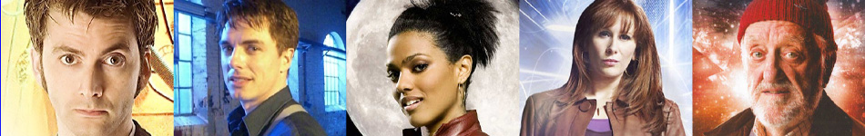

| Home | The Doctors | The Companions | The Villains |
|  | |||
Doctor WhoThe Doctors
The CompanionsThe Villains
|
Melanie Bush
Mel, also sometimes referred to as Melanie, is a fictional character in the long-running British science fiction television series Doctor Who. A computer programmer from the 20th Century who is a companion of the Sixth and Seventh Doctors, she was a regular in the programme from 1986 to 1987. Her family name was never revealed on-screen, but production notes and promotional literature refer to her as Melanie Bush. She was portrayed by Bonnie Langford. Mel appeared in six stories (20 episodes). |